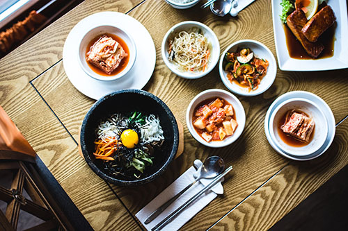
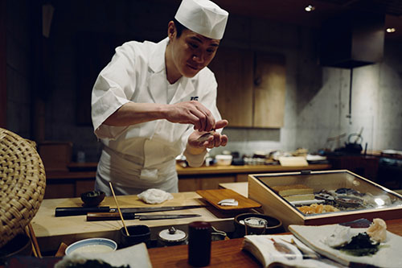

Dining in Japan


Japanese cuisine is unique and delicious. It is also suprisingly healthy compared to North American food. When visiting Japan, eating different and new dishes is one of the best ways to experience the culture. Below, five of Japan's most popular dishes are listed.